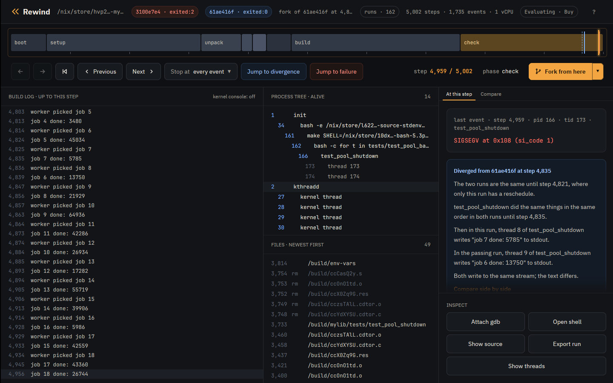

Tutorial · Nix
Tutorial: a flaky Nix build
This tutorial takes a derivation whose tests fail now and then, has Rewind VM find a failing run, looks at the crash, and checks the fix across 64 thread interleavings.
The derivation is mylib, a small C thread pool in
examples/mylib.
Its pool_shutdown frees the job queue before joining the workers, so a worker
still finishing a job can write through a freed, nulled pointer.
Every transcript below is real output from rewind on a 16 core AMD laptop.
Install
You need x86_64 Linux with KVM and Nix with flakes enabled.
$ nix profile install github:fzakaria/rewindvm
$ ls -l /dev/kvm
crw-rw-rw- 1 root kvm 10, 232 Oct 1 20:16 /dev/kvm
The build comes from rewindvm.cachix.org; say yes when Nix asks to trust it.
The desktop app is github:fzakaria/rewindvm#app. On NixOS, use the module
instead:
inputs.rewind.url = "github:fzakaria/rewindvm";
# with inputs.rewind.nixosModules.default imported
programs.rewind.enable = true;
programs.rewind.app.enable = true;
# AMD only: make the branch counter exact at every boot
programs.rewind.amdBranchCounterWorkaround = true;
If /dev/kvm is not yours to use, add yourself to the kvm group.
On AMD, run sudo rewind pmu enable once after each boot;
Counter time says why.
The flaky build
On the host the build usually passes. Rebuilt 45 times, it failed twice:
$ nix build --rebuild -L github:fzakaria/rewindvm#mylib
...
mylib> running tests/test_pool_shutdown
...
mylib> job 16 done: 5986
mylib> worker picked job 18
mylib> job 17 done: 43360
mylib> /nix/store/...-bash-5.3p15/bin/bash: line 1: 133 Segmentation fault (core dumped) ./$t
mylib> make: *** [Makefile:18: check] Error 1
error: Cannot build '/nix/store/hvp2d0h9l97d19d3xp5k3vf6xwhg4axr-mylib-0.3.0.drv'.Run it again and it usually passes, leaving nothing to look at.
Build it in Rewind VM
rewind nix builds a derivation as the Nix sandbox would, inside a
deterministic virtual machine:
$ rewind nix --epoch 1790985600 github:fzakaria/rewindvm#mylib
rewind: packing 62 store paths for mylib-0.3.0
...
rewind: run 61ae416f9727e6f5 exited:0 after 6198 steps, 0.217s virtual, 2.106s wall (poweroff)
/nix/store/f6a9gy362szw6nxx3ikrklr8glr6rdln-mylib-0.3.0 a9d703ba89774f3d matches your store, rewindvm.cachix.org
It passes, in the same 6198 steps every time. --epoch fixes the VM's clock at
boot, one of the run's inputs, so your runs are the ones shown here. The last line says
the output matches the copy in your store.
Find a failing interleaving
rewind check builds it again under perturbed schedules, which reschedule and
stall the VM's threads at different points, and stops at the first batch in which a build
ends differently:
$ rewind check --epoch 1790985600 github:fzakaria/rewindvm#mylib
schedule 0: exited:0 6198 steps a9d703ba8977 run 61ae416f9727e6f5
schedule 1: exited:0 7141 steps a9d703ba8977 run 6b3b8f924566cc1e
schedule 2: exited:0 7329 steps a9d703ba8977 run b88cd56d61d61ffe
schedule 3: exited:2 5254 steps run 8d540c2a4cc82874
schedule 4: exited:2 5176 steps run 0caf1e91351df31f
schedule 5: exited:0 7334 steps a9d703ba8977 run 74df706a5cc8799c
schedule 6: exited:0 7224 steps a9d703ba8977 run d202fdd65adfdef7
schedule 7: exited:2 5555 steps run 9f6123d7db38191a
schedule 8: exited:2 5238 steps run d95131eb35b1f79c
schedule 9: exited:0 7181 steps a9d703ba8977 run fe1bc946135109b7
schedule 10: exited:0 7169 steps a9d703ba8977 run b531324ea16b31bc
schedule 11: exited:0 7375 steps a9d703ba8977 run 3905e796723d44a8
schedule 12: exited:0 7496 steps a9d703ba8977 run 771dada04a9984c2
schedule 13: exited:2 5339 steps run bba30a648e96e6ec
schedule 14: exited:2 5135 steps run d57f7944fa088959
schedule 15: exited:0 7367 steps a9d703ba8977 run e2462b467fc9629e
schedule 16: exited:0 7330 steps a9d703ba8977 run 8cb3470aaa49ba31
schedule 3 ends differently; narrowing the steps it perturbs
perturbing only steps 4821..5081 still ends differently
step 5080 decides it: a 1280 µs stall there makes the run fail
passing: run 516c10eebf667023, schedule 3 over steps 4821..5080
failing: run c2ca1ecd2243eff6, schedule 3 over steps 4821..5081
the two are the same run until step 5080
where ./tests/test_pool_shutdown first behaves differently:
both 5063 166/173 write(1, "job 27 done: 47698\n")
both 5065 166/173 write(1, "worker picked job 29\n")
both 5080 166/174 write(1, "job 28 done: 31871\n")
failing 5105 166/174 SIGSEGV code=1 addr=0x108
failing 5108 166/166 SIGSEGV code=0 addr=0x0
failing 5110 166/174 thread exit(test_pool_shutd) killed:SIGSEGV
failing 5114 166/173 thread exit(test_pool_shutd) killed:SIGSEGV
passing 5081 166/174 write(1, "worker picked job 30\n")
passing 5088 166/173 write(1, "job 29 done: 509\n")
passing 5089 166/173 write(1, "worker picked job 31\n")
passing 5099 166/174 thread exit(test_pool_shutd) exited:0
open both in the desktop app: rewind open c2ca1ecd2243eff6 5105 --compare 516c10eebf667023
Schedules 3, 4, 7, 8, 13 and 14 fail. check narrows schedule 3's failure to
one step, 5080. The passing run perturbs the same steps less that one, so the two runs are
the same until 5080, and only the failing one gets a 1280 µs stall there. The last block
shows where the test's own output then differs. The search took 13 seconds.
--all tries every schedule, which measures how flaky a build is:
$ rewind check --all --epoch 1790985600 github:fzakaria/rewindvm#mylib | grep 'ended differently'
17 of 64 perturbed schedules ended differentlyLook at the failure
The failing run keeps every event with its step:
$ rewind log c2ca1ecd --steps | tail -4
5065 166 worker picked job 29
5080 166 job 28 done: 31871
5120 162 /nix/store/...-bash-5.3p15/bin/bash: line 1: 166 Segmentation fault ./$t
5124 161 make: *** [Makefile:18: check] Error 1
$ rewind events c2ca1ecd --from 5080 --to 5107
5080 166/174 write(1, "job 28 done: 31871\n")
5103 0/0 console "[ 0.202888] test_pool_shutd[174]: segfault at 108 ip 00005556d620d437 sp 00007feee6e68e10 error 6 in test_pool_shutdown[1437,5556d620d000+1000] likely on CPU 0 (core 0, socket 0)"
5104 0/0 console "[ 0.202893] Code: fa 48 8d 35 2a 0c 00 00 bf 02 00 00 00 b8 00 00 00 00 e8 ac fc ff ff 48 8b 05 b5 2b 00 00 48 8b 38 e8 8d fc ff ff 49 8b 46 58 <83> 80 08 01 00 00 01 e9 b5 fe ff ff 55 48 89 e5 41 54 53 be 78 00"
5105 166/174 SIGSEGV code=1 addr=0x108
The kernel's report marks the faulting instruction,
<83> 80 08 01 00 00 01: addl $1, 0x108(%rax), which is
p->queue->completed++ with p->queue null. The processes
alive at the crash:
$ rewind ps c2ca1ecd 5105
1 /init
34 bash -e /nix/store/...-source-stdenv.sh /nix/store/...-default-builder.sh
161 make SHELL=/nix/store/...-bash-5.3p15/bin/bash PREFIX=$(out) VERBOSE=y check
162 /nix/store/...-bash-5.3p15/bin/bash -c for t in tests/test_pool_basic tests/test_pool_shutdown; do echo "running $t"; ./$t || exit 1; done
166 ./tests/test_pool_shutdown
173 (thread)
174 (thread)Look inside the VM
rewind cat, rewind shell and rewind gdb work on a
throwaway fork of the run at a step. At the SIGSEGV, step 5105:
$ rewind cat c2ca1ecd 5105 src/pool.c --pid 166 | sed -n '/^void pool_shutdown/,/^}/p'
void pool_shutdown(struct pool *p)
{
pthread_mutex_lock(&p->lock);
p->stopping = 1;
pthread_cond_broadcast(&p->ready);
pthread_mutex_unlock(&p->lock);
/* The bug: the queue goes before the workers are joined. */
free(p->queue);
p->queue = NULL;
for (int i = 0; i < POOL_WORKERS; i++)
pthread_join(p->workers[i], NULL);
pthread_cond_destroy(&p->ready);
pthread_mutex_destroy(&p->lock);
free(p);
}
$ printf 'pwd; ls; exit\n' | rewind shell c2ca1ecd 5105 --pid 166
rewind: a shell at step 5105 of c2ca1ecd2243eff6; exit it to leave
[rewind] /build/mylib # pwd; ls; exit
/build/mylib
Containerfile Makefile libmylib.a src tests
rewind gdb loads the symbols of the VM's kernel and of the process running at
the step. From step 5080, thread 174's last write, continue to the line that faulted:
$ rewind gdb c2ca1ecd 5080 -- -batch -ex 'break src/pool.c:77 if p->queue == 0' -ex continue -ex 'bt 3' -ex 'p p->queue' -ex list
rewind: step 5080 ran in process 166; loading symbols for 4 of its files
rewind: fetched 3 source files from the VM
rewind: gdb at step 5080 of c2ca1ecd2243eff6
Downloading 10.70 K separate debug info for /nix/store/h4wfwic161kxrr74jlzla5lsm28hgary-glibc-2.44-25/lib/libpthread.so.0...
Downloading 4.35 M separate debug info for /nix/store/h4wfwic161kxrr74jlzla5lsm28hgary-glibc-2.44-25/lib/libc.so.6...
Downloading 658.16 K separate debug info for /nix/store/h4wfwic161kxrr74jlzla5lsm28hgary-glibc-2.44-25/lib/ld-linux-x86-64.so.2...
Downloading 740.00 B source file /build/linux-7.2.8/./arch/x86/include/asm/shared/io.h...
0xffffffff812868ab in __outl (value=<optimized out>, port=1504) at ./arch/x86/include/asm/shared/io.h:24
24 BUILDIO(l, , u32)
[Switching to thread 4 (Thread 1.174)]
Downloading 1.79 K source file /build/glibc-2.44/nptl/../sysdeps/unix/sysv/linux/x86_64/syscall_cancel.S...
#0 __syscall_cancel_arch () at ../sysdeps/unix/sysv/linux/x86_64/syscall_cancel.S:56
56 ret
Breakpoint 1 at 0x5556d620d433: file src/pool.c, line 77.
Thread 4 hit Breakpoint 1, worker (arg=0x5556f833c010) at src/pool.c:77
77 p->queue->completed++;
#0 worker (arg=0x5556f833c010) at src/pool.c:77
#1 0x00007feee6f0c7d1 in start_thread (arg=<optimized out>) at pthread_create.c:454
#2 0x00007feee6f98b1c in __GI___clone3 () at ../sysdeps/unix/sysv/linux/x86_64/clone3.S:78
$1 = (struct queue *) 0x0
72 * the bug. */
73 long result = run_job(job);
74 if (!p->stopping) {
75 printf("job %d done: %ld\n", job, result & 0xffff);
76 fflush(stdout);
77 p->queue->completed++;
78 }
79 }
80 }
81
[Inferior 1 (process 1) detached]
The breakpoint is one of the CPU's debug registers, so the fork runs unchanged until line
77 with p->queue null. Without --, gdb stays open for you to
type into.
Replay it
$ rewind replay c2ca1ecd
identical: 1756 events over 5145 steps
$ rewind replay c2ca1ecd --from 4821
identical from the keyframe at step 1279 to the end (0.65s)
--from starts at the nearest keyframe before the step. A run replays on any
machine with the same CPU vendor that has the features of the run's CPU model.
Fork it
A fork is its parent up to a step, then another schedule:
$ rewind fork 61ae416f 4821 --schedule 5 --quiet
rewind: run 2e921d7c2f200f39 exited:0 after 6504 steps, 0.220s virtual, 0.431s wall (poweroff)
rewind: the fork first differs from its parent at step 4834
rewind: open it beside its parent in the desktop app: rewind open 2e921d7c2f200f39 4834 --compare 61ae416f9727e6f5
$ rewind fork 61ae416f 4821 --schedule 6 --quiet
rewind: run 87b33b09cc9bed04 exited:0 after 6530 steps, 0.224s virtual, 0.423s wall (poweroff)
rewind: the fork first differs from its parent at step 4834
rewind: open it beside its parent in the desktop app: rewind open 87b33b09cc9bed04 4834 --compare 61ae416f9727e6f5
$ rewind fork 61ae416f 4821 --schedule 7 --quiet
rewind: run 3100e7e4b5c99287 exited:2 after 5002 steps, 0.201s virtual, 0.368s wall (poweroff)
rewind: the fork first differs from its parent at step 4835
rewind: open it beside its parent in the desktop app: rewind open 3100e7e4b5c99287 4835 --compare 61ae416f9727e6f5
$ rewind fork 61ae416f 4821 --schedule 8 --quiet
rewind: run 64ae1a544c86a917 exited:2 after 5015 steps, 0.201s virtual, 0.356s wall (poweroff)
rewind: the fork first differs from its parent at step 4833
rewind: open it beside its parent in the desktop app: rewind open 64ae1a544c86a917 4833 --compare 61ae416f9727e6f5
From step 4821 of the schedule 0 build, schedules 7 and 8 crash and 5 and 6 pass.
check --run asks many schedules at once; the
advanced tutorial
shows it.
Scrub it in the app
The desktop app shows a run on a timeline: drag the playhead to any step for the output,
processes, files and event there, jump to the failure or to where the run left the passing
one, and fork from the playhead. Opened on check's two runs, a dashed blue
mark on the timeline is step 5080, where only the failing run gets a 1280 µs stall.

$ rewind-app ~/.local/share/rewind/runs/c2ca1ecd2243eff6 --compare ~/.local/share/rewind/runs/516c10eebf667023
Press f to jump to the failure at step 5105, then s to open the source panel. After a few
seconds it shows worker at src/pool.c:77, with
p->queue->completed++; marked: the line that read the queue after
pool_shutdown had set it to NULL. The t key shows which thread held the CPU
around where the two runs part.
Fix it and check the fix
Clone the repository to edit the flake's mylib:
$ git clone https://github.com/fzakaria/rewindvm
$ cd rewindvm
In examples/mylib/src/pool.c, count the job under the lock, and free the
queue after the workers are joined:
@@ -71,11 +71,13 @@
* stopping. The check and the count are not under the lock:
* the bug. */
long result = run_job(job);
+ pthread_mutex_lock(&p->lock);
if (!p->stopping) {
printf("job %d done: %ld\n", job, result & 0xffff);
fflush(stdout);
p->queue->completed++;
}
+ pthread_mutex_unlock(&p->lock);
}
}
@@ -120,12 +122,10 @@
pthread_cond_broadcast(&p->ready);
pthread_mutex_unlock(&p->lock);
- /* The bug: the queue goes before the workers are joined. */
- free(p->queue);
- p->queue = NULL;
-
for (int i = 0; i < POOL_WORKERS; i++)
pthread_join(p->workers[i], NULL);
+ free(p->queue);
+ p->queue = NULL;
pthread_cond_destroy(&p->ready);
pthread_mutex_destroy(&p->lock);
free(p);$ rewind check --all --epoch 1790985600 .#mylib
...
0 of 64 perturbed schedules ended differently
same result under all 65 schedulesBefore the fix, 17 of the same 64 schedules crashed.
Limits
The VM has one vCPU, so threads interleave but never run at the same instant: a race between plain loads and stores with no system call between them is out of reach, while races across a system call, a lock or a sleep, like this one, are in reach. Design has the full list.
What to read next
- The container tutorial: the same bug from a Docker image, with no Nix.
- The advanced tutorial: threads, watchpoints, the kernel's side of a crash, sharing a run and more.
- Counter time: how the VM's clock follows its work.
The engine is free and MIT licensed. The desktop app is $49 personal or $99 per seat.